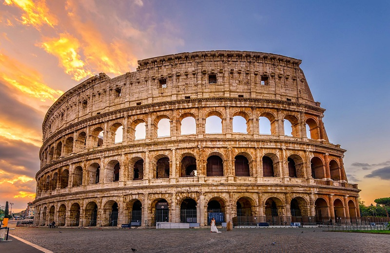
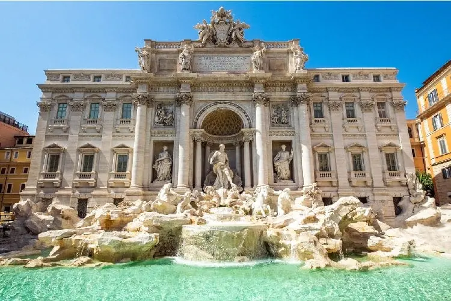

"O Coliseu de Roma ou Anfiteatro Flaviano é um grandioso monumento
histórico e arquitetônico de formato cilíndrico que está localizado na
capital da Itália: Roma.
Construído na Antiguidade, o Coliseu de
Roma atualmente é um dos pontos turísticos mais visitados da cidade."

A Fontana di Trevi, inaugurada em 1762 em Roma, é a maior e mais
famosa fonte barroca da Itália. Situada no rione Trevi, ela marca o
ponto final do antigo aqueduto Aqua Virgo, representando Netuno
em uma concha. É famosa pela tradição de jogar moedas para garantir
o retorno à cidade.
| Destino | Região | Melhor época para visitar |
|---|---|---|
| Roma | Lazio | Abril-Junho / Setembro-Outubro |
| Veneza | Veneto | Abril-Junho / Setembro |
| Florença | Toscana | Abril-Junho / Setembro-Outubro |
| Milão | Lombardia | Março-Maio / Setembro-Novembro |